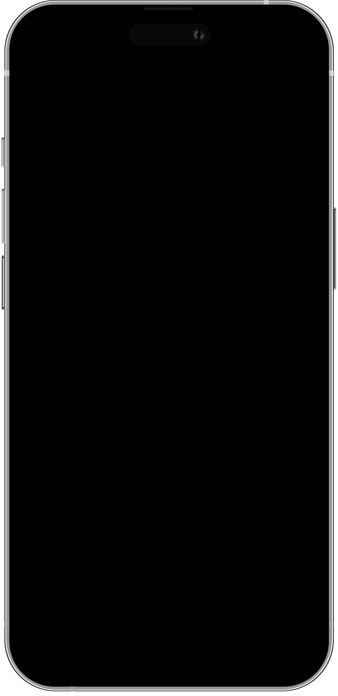
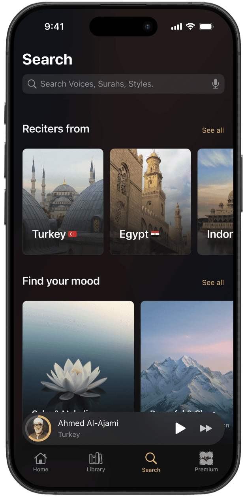

80%
Of the users want fast access to familiar reciters and specific origins
Many listeners search by country or reciter type first, so discovery should support those mental models early
6 mins read
Overview
Recita is an AI-driven, Quran audio app designed to make it easier for Muslims to discover lesser-known, talented reciters through a smooth, intentional listening experience. It also supports reciters by giving them a dedicated platform to publish their recitation and connect with a broader audience.
Problem
You're at a masjid you've never visited before, and the recitation leaves you breathless. Then you leave, and you never find that voice again.
Thousands of exceptional reciters exist around the world — local imams, emerging voices, regional talents — with no platform to build an audience or earn from their craft. Listeners have no way to find them.
Solution
On one side, I built a calm, distraction-free space where Seekers can effortlessly discover new voices and return to the recitations they love.
On the other side, I created a structured, trustworthy environment for Voices By giving creators a clear path to join, upload content
Design Process
I needed to understand the users, their needs, behaviours, and pain points, as well as the market and competitive analysis.
Based on the results I got from the survey, online meeting notes and opportunities in leading companies’ gaps and weaknesses, I found that:
80%
Of the users want fast access to familiar reciters and specific origins
Many listeners search by country or reciter type first, so discovery should support those mental models early
70%
of users want recitations that match their mood without browsing too much,
so I added a clear mood-based section to help them reach the right content faster.
80%
of voice users said plays, likes, and earnings were the most important metrics
so I placed them at the top of the dashboard to give reciters instant access to what matters most.
92%
of testers said the onboarding flow felt personal and relevant,
which confirmed my decision to let users choose recitations early so the app could adapt to their taste from the start.
After I got the insights from research, I focused on balancing feature richness with intuitive design that doesn't overwhelm users.
Carefully crafted user flows to guarantee a straightforward and accessible experience, refining the design iteratively based on user feedback and testing.

Design Decisions
Since Recita was entering an untapped market, I designed a clean landing page to introduce the product, capture early interest, and gather real users before launch. The “Get Early Access” CTA and live sign-up counter were intentional choices to build credibility and momentum.

Every listener has a different relationship with Quranic recitation. I designed an interactive onboarding flow that captures user preferences before they even enter the app. By asking users to listen and select at least three recitations they enjoy, the system immediately learns their taste. This ensures their first feed is highly personalized, driving immediate satisfaction and long-term retention.
80% of users search for reciters by country. 70% want mood-based discovery without endless scrolling. These findings directly shaped the search page layout — placing country and mood filters prominently so users find what they need in seconds, not minutes.
Rather than a generic content feed, I designed the home screen around the user’s unique profile — surfacing reciters that match their taste, trending voices, and updates from followed reciters in a clear visual hierarchy. The clean, dark UI removes distraction so the content itself leads the experience.
Recita is a two-sided platform — it needs both listeners and reciters to thrive. To grow the reciter side organically, I designed a frictionless conversion flow accessible directly from the profile page. A single prominent CTA — “Become a Voice” — leads users through a short application: personal details, a brief audio sample, and a submission for review. This reduces the barrier to entry and turns engaged listeners into potential contributors without ever leaving the app.
Research showed that 80% of voice users wanted to track plays, likes, and earnings most. I placed these metrics at the top of the dashboard so users can check performance instantly, while a floating add button and clear status filters make it easy to upload and manage recitations without searching. The clean hierarchy keeps the interface focused, fast, and easy to scan.
Outcomes
Recita is currently in development. The following results are based on usability testing conducted with real users across the target audience.
92%
of testers said the onboarding preference flow made the app feel more personal from the start.
88%
of listeners found a reciter style they liked within the first few minutes of using the prototype.
85%
of users said mood-based discovery helped them reach relevant recitations faster than browsing manually.
90%
of testers described the interface as clean, focused, and easy to navigate.
80%
of voice users said the dashboard gave them the key information they needed in one place, especially plays, likes, and earnings.
Reflections
Designing for a culturally specific audience means understanding their world before writing a single survey question. Knowing about Muslim listening habits first helped me ask sharper, more informed questions — which directly shaped features like country-based discovery and mood matching. Better context always leads to better research.
When I first spoke with the stakeholder, the product had a clear shape in his mind. He had assumptions about what users would want and had already started forming the feature list around those beliefs. After conducting the research, the product took a noticeably different direction. The real user needs, pain points, and opportunities that emerged were not what he had expected. This confirmed that research is not a formality — it is the step that aligns the product with reality.
The current version of Recita is an MVP, and there is already a clear direction for what comes next. One insight that stood out during research was around Ramadan: many Muslims attend night prayers at their local mosque and wish they could follow a full Quran recitation with their imam. A future version of Recita could close that gap by allowing local imams to record and publish their prayers inside the app, and by adding a feature to discover nearby mosques and imams by location.